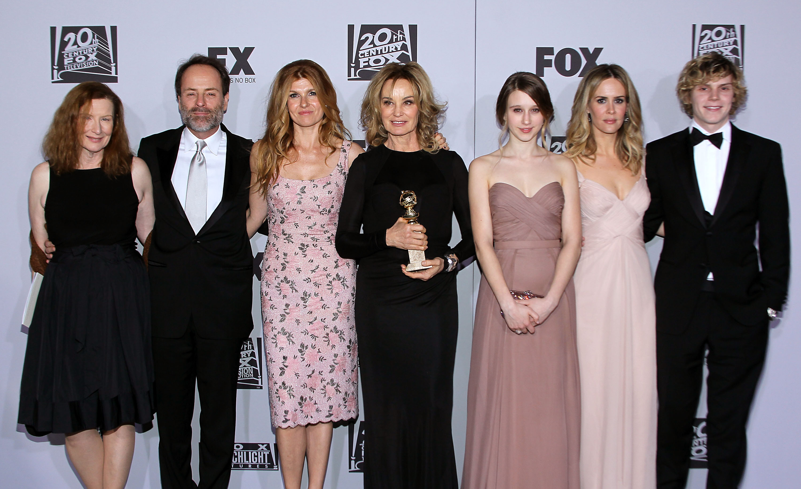
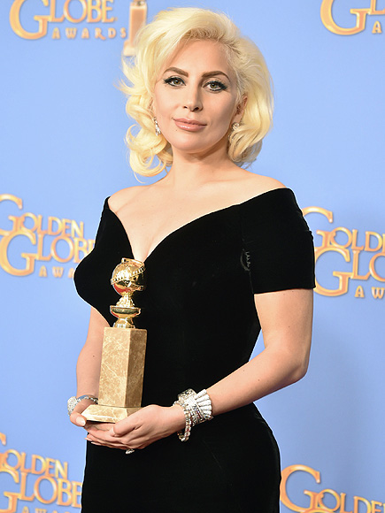
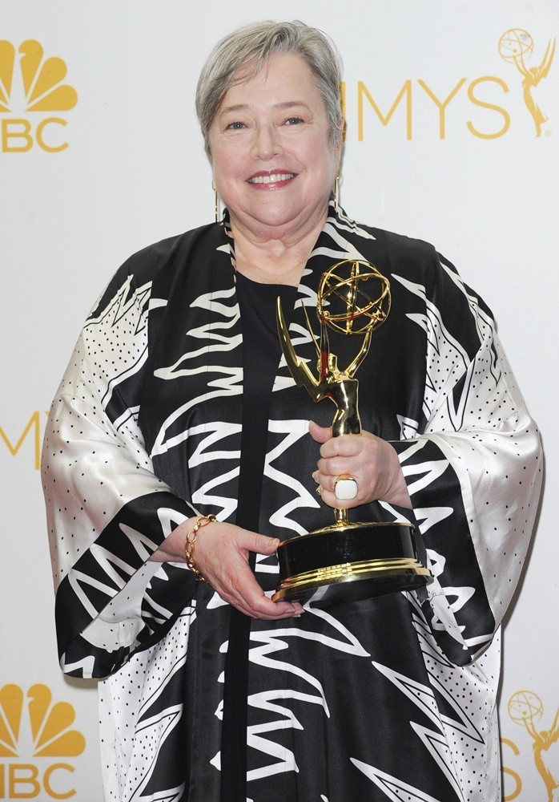
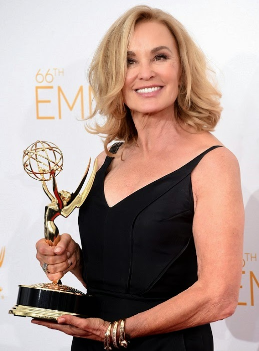
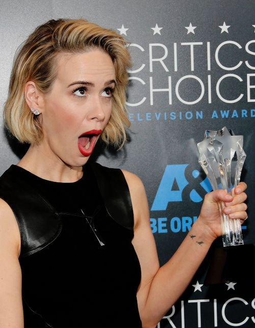

Home
Temporadas
Prêmios
Elenco
Prêmios
2011
-Satellite Award: Prêmio Especial de Interpretação em uma Série de Televisão - Jessica Lange
-Satellite Award de Melhor Gênero de Série
2012
-Prêmio Emmy do Primetime: Melhor Atriz Coadjuvante em Minissérie ou Filme - Jessica Lange
-Prêmio Globo de Ouro: Melhor Atriz Coadjuvante em Televisão - Jessica Lange
-Prêmio do Sindicato dos Atores: Melhor Atriz em Série Dramática - Jessica Lange
-Prêmio Emmy do Primetime: Penteado – Minissérie ou Telefilme
2013
-Prêmio Emmy do Primetime: Melhor Ator Coadjuvante em Minissérie ou Telefilme - James Cromwell
-Critics Choice Television Award de Melhor Atriz Secundária em Filme ou Minissérie - Sarah Paulson
-Critics Choice Television Award de Melhor Ator Secundário em Filme ou Minissérie - Zachary Quinto
-Prêmio Emmy do Primetime: Melhor Edição de Som em Minissérie, Telefilme ou Especial
-ADG Award de Melhor Design em Telefilme ou Minissérie
-Prêmio GLAAD Media: Telefilme ou Minissérie Marcante
 
2014
-Critics' Choice Television Award for Best Actress in a Movie/Miniseries - Jessica lange
-Prêmio Emmy do Primetime: Atriz em Minissérie ou Filme para TV - Jessica Lange
-Prêmio Emmy do Primetime: Melhor Atriz Coadjuvante em Minissérie ou Filme - Kathy Bates
-Prêmio Emmy do Primetime: Penteado – Minissérie ou Telefilme
-Prêmio Emmy do Primetime: Melhor Figurino - Minissérie, Filme ou Especial
-People's Choice Award: Filme de TV ou Minissérie Favorito
2015
-Satellite Award de Melhor Atriz Coadjuvante em uma Série, Minissérie ou Telefilme - Sarah Paulson
-Critics Choice Television Award de Melhor Atriz Secundária em Filme ou Minissérie - Sarah Paulson
-Costume Designers Guild Award de Melhor Figurino Original para Filme ou Minissérie de TV
-Prêmio Emmy do Primetime: Melhor Figurino Para Série de Época/Fantasia, Série Limitada ou Filme Para TV
-Prêmio Emmy do Primetime: Melhor Maquiagem para Minissérie, Filme ou Especial para TV (Sem Prótese)
-Prêmio Emmy do Primetime: Maquiagem - Série, Minissérie ou Telefilme - Com Próteses
-Prêmio Emmy do Primetime: Efeitos Visuais de Apoio
-Prêmio Emmy do Primetime: Penteado – Minissérie ou Telefilme
2016
-Prêmio Globo de Ouro: Melhor Atriz em Minissérie ou Filme para TV - Lady Gaga
-Prêmio Emmy do Primetime: Melhor Maquiagem para Minissérie, Filme ou Especial para TV (Sem Prótese)
-Costume Designers Guild Award de Melhor Figurino Original para Série Contemporânea de TV
2017
-Costume Designers Guild Award de Melhor Figurino Original para Série Contemporânea de TV
  
Home
Temporadas
Prêmios
Elenco
american horror story | todos os direitos (nenhum pra ser mais exata) reservados - vitória silva - 2018©